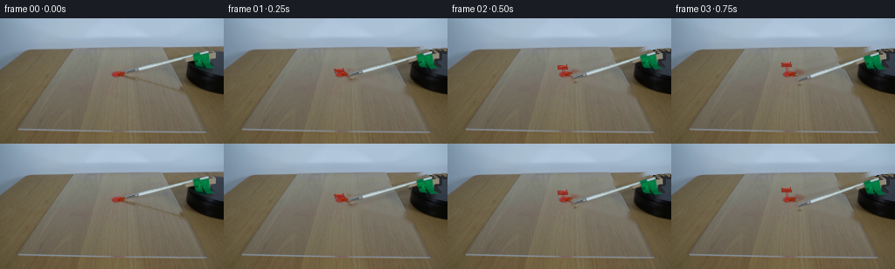
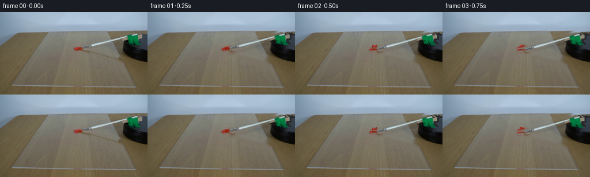
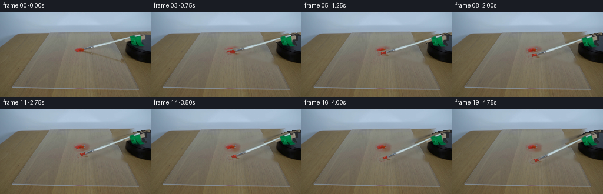
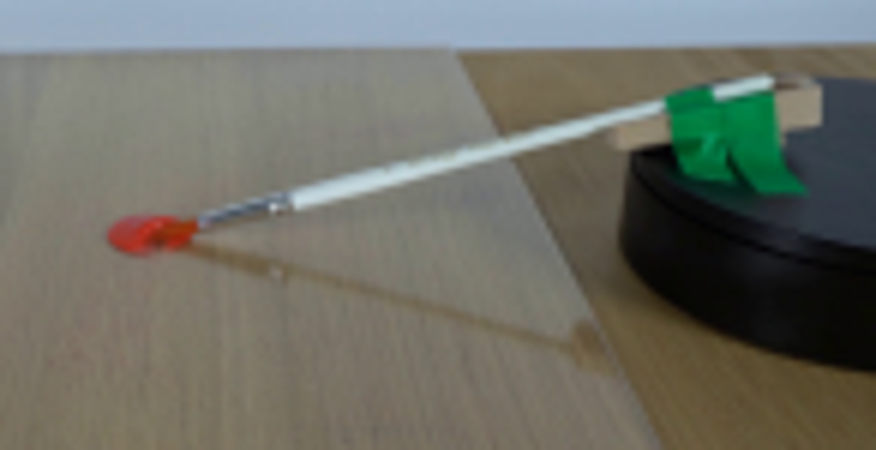
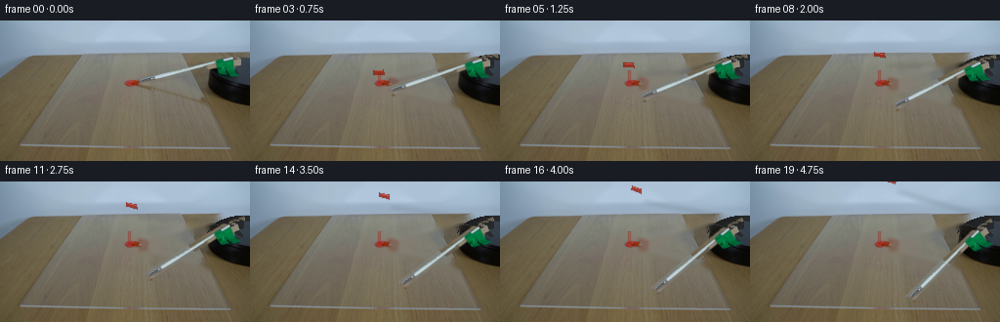
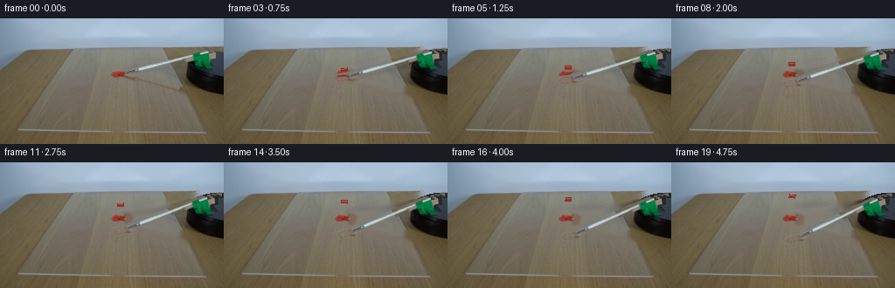

CODING AGENTS AS PIXEL WORLD MODELS
traex/GPT-5.6-Sol · 0131
点击播放 · 原生 RGB 像素
逐轮保存的候选
回放视频、检查图与代码变化。
每份候选均可单独播放。实际图片检查记录在下方工具轨迹中。
候选 01播放与检查图
点击播放 · 原生 RGB 像素


展开代码变化
--- 上一保存版本
+++ 本次保存版本
@@ -0,0 +1,158 @@
+from pathlib import Path
+import cv2
+import numpy as np
+from PIL import Image, ImageDraw, ImageFilter
+import artifact_io
+
+CASE_DIR = Path(__file__).resolve().parent
+W, H = 256, 144
+N = 20
+
+
+def line_mask(shape, p0, p1, width):
+ m = np.zeros(shape, np.uint8)
+ cv2.line(m, p0, p1, 255, width, cv2.LINE_AA)
+ return m
+
+
+def polygon_mask(shape, points):
+ m = np.zeros(shape, np.uint8)
+ cv2.fillPoly(m, [np.asarray(points, np.int32)], 255, cv2.LINE_AA)
+ return m
+
+
+def transform_points(points, center, degrees):
+ a = np.deg2rad(degrees)
+ c, s = np.cos(a), np.sin(a)
+ pts = np.asarray(points, np.float32) - np.asarray(center, np.float32)
+ # This is clockwise on an image, whose y axis points downward.
+ q = pts @ np.array([[c, s], [-s, c]], np.float32)
+ return q + np.asarray(center, np.float32)
+
+
+def alpha_over(base, rgba):
+ a = rgba[..., 3:4].astype(np.float32) / 255.0
+ return np.clip(rgba[..., :3].astype(np.float32) * a + base.astype(np.float32) * (1-a), 0, 255).astype(np.uint8)
+
+
+def build_frames():
+ first = np.asarray(Image.open(CASE_DIR / 'first_frame.png').convert('RGB'), dtype=np.uint8)
+ bgr = cv2.cvtColor(first, cv2.COLOR_RGB2BGR)
+
+ # Isolate the real photographed moving assembly. The narrow masks retain
+ # source texture and illumination, while avoiding any moving background.
+ obj = np.zeros((H, W), np.uint8)
+ obj = cv2.max(obj, line_mask((H, W), (137, 63), (232, 39), 7)) # handle + ferrule
+ obj = cv2.max(obj, polygon_mask((H, W), [(125,60),(143,58),(148,60),(146,67),(127,69)]))
+
+ # Green clamp: colour-select inside a tight region, then close tiny gaps.
+ yy, xx = np.mgrid[:H, :W]
+ rgb = first.astype(np.int16)
+ green = ((xx >= 214) & (xx <= 251) & (yy >= 33) & (yy <= 68) &
+ (rgb[...,1] > rgb[...,0] * 1.16) &
+ (rgb[...,1] > rgb[...,2] * 1.10) & (rgb[...,1] > 48)).astype(np.uint8) * 255
+ green = cv2.morphologyEx(green, cv2.MORPH_CLOSE, np.ones((3,3), np.uint8))
+ green = cv2.dilate(green, np.ones((2,2), np.uint8), iterations=1)
+ obj = cv2.max(obj, green)
+
+ # Small pale wooden retaining block on the turntable.
+ block = polygon_mask((H, W), [(230,35),(255,34),(255,52),(240,55),(231,49)])
+ # Keep only locally bright, low-saturation pixels from that polygon.
+ mx, mn = rgb.max(2), rgb.min(2)
+ block = cv2.bitwise_and(block, (((mx > 105) & ((mx-mn) < 67)).astype(np.uint8)*255))
+ obj = cv2.max(obj, block)
+
+ # Do not lift the stationary dollop itself. A small amount of red on the
+ # bristles is drawn separately below.
+ protect_paint = np.zeros((H,W), np.uint8)
+ cv2.ellipse(protect_paint, (134,64), (9,6), 0, 0, 360, 255, -1, cv2.LINE_AA)
+ obj[protect_paint > 100] = 0
+ obj = cv2.GaussianBlur(obj, (3,3), .48)
+
+ # Reconstruct the static wood/acrylic and turntable beneath the initial
+ # assembly. Include the original cast shadow in the cleanup mask.
+ cleanmask = cv2.dilate((obj > 18).astype(np.uint8)*255, np.ones((5,5),np.uint8), iterations=1)
+ shadow_old = np.zeros((H,W), np.uint8)
+ cv2.line(shadow_old, (140,69), (208,87), 255, 6, cv2.LINE_AA)
+ shadow_old = cv2.GaussianBlur(shadow_old, (7,7), 1.8)
+ cleanmask = cv2.max(cleanmask, shadow_old)
+ # Again preserve all of the red paint, including its soft edge.
+ cleanmask[protect_paint > 20] = 0
+ clean_bgr = cv2.inpaint(bgr, cleanmask, 4, cv2.INPAINT_TELEA)
+ clean = cv2.cvtColor(clean_bgr, cv2.COLOR_BGR2RGB)
+
+ # Gentle local correction to keep the uncovered turntable top dark where
+ # the clamp was initially resting.
+ top_patch = np.zeros((H,W), np.uint8)
+ cv2.ellipse(top_patch, (256,54), (43,19), 0, 0, 360, 255, -1, cv2.LINE_AA)
+ correction_region = (cleanmask > 15) & (top_patch > 0) & (xx > 211) & (yy > 34)
+ # Pull implausibly bright inpainted pixels toward neighboring charcoal.
+ lum = clean.mean(2)
+ bad = correction_region & (lum > 61)
+ if np.any(bad):
+ shade = np.clip(31 + .34*(xx-214) + .18*(yy-40), 24, 48)
+ clean[bad] = np.stack([shade[bad]*.91, shade[bad]*.94, shade[bad]], axis=1).astype(np.uint8)
+
+ source_rgba = np.dstack([first, obj])
+ center = (258.0, 52.0)
+ frames = []
+
+ for i in range(N):
+ if i == 0:
+ frames.append(first.copy())
+ continue
+ # A steady 6.4 degrees/second rotation: clearly real-time, and enough
+ # travel for the bristles to pass fully beyond the paint.
+ degrees = 1.60 * i
+ M = cv2.getRotationMatrix2D(center, degrees, 1.0)
+ moved = cv2.warpAffine(source_rgba, M, (W,H), flags=cv2.INTER_LANCZOS4,
+ borderMode=cv2.BORDER_CONSTANT, borderValue=(0,0,0,0))
+ frame = clean.copy()
+
+ # Soft, rotated cast shadow on the translucent acrylic/wood surface.
+ # It falls lower-right from the elevated shaft.
+ shaft = transform_points([(137,63),(231,39)], center, degrees)
+ sh = Image.new('RGBA', (W,H), (0,0,0,0))
+ sd = ImageDraw.Draw(sh)
+ p0 = tuple((shaft[0] + np.array([4.5,10.5])).tolist())
+ p1 = tuple((shaft[1] + np.array([4.5,10.5])).tolist())
+ sd.line([p0,p1], fill=(54,35,15,49), width=3)
+ sh = sh.filter(ImageFilter.GaussianBlur(2.2))
+ frame = alpha_over(frame, np.asarray(sh))
+
+ # Paint response: the main dollop remains in place, with a short wet
+ # tapered pull in the direction in which the brush departed.
+ smear = Image.new('RGBA', (W,H), (0,0,0,0))
+ d = ImageDraw.Draw(smear)
+ arc_pts = []
+ upto = min(degrees, 5.7)
+ for aa in np.linspace(.4, upto, max(2, int(upto*2))):
+ arc_pts.append(tuple(transform_points([(133.0,64.0)], center, aa)[0]))
+ if len(arc_pts) > 1:
+ d.line(arc_pts, fill=(171,30,17,115), width=3)
+ d.line(arc_pts[1:], fill=(211,43,24,92), width=1)
+ smear = smear.filter(ImageFilter.GaussianBlur(.45))
+ frame = alpha_over(frame, np.asarray(smear))
+
+ frame = alpha_over(frame, moved)
+
+ # A tiny amount of red paint remains on the very end of the bristles.
+ tip_poly = transform_points([(126.8,62.1),(136.8,60.7),(138.4,65.2),(127.5,66.0)], center, degrees)
+ wet = Image.new('RGBA',(W,H),(0,0,0,0))
+ wd = ImageDraw.Draw(wet)
+ wd.polygon([tuple(p) for p in tip_poly], fill=(151,30,18,205))
+ hi = transform_points([(128.5,62.5),(135.5,61.8)], center, degrees)
+ wd.line([tuple(hi[0]),tuple(hi[1])], fill=(227,58,35,165), width=1)
+ wet = wet.filter(ImageFilter.GaussianBlur(.30))
+ frame = alpha_over(frame, np.asarray(wet))
+ frames.append(frame)
+
+ return np.stack(frames).astype(np.uint8)
+
+
+if __name__ == '__main__':
+ frames = build_frames()
+ assert frames.shape == (20, 144, 256, 3) and frames.dtype == np.uint8
+ original = np.asarray(Image.open(CASE_DIR/'first_frame.png').convert('RGB'), dtype=np.uint8)
+ assert np.array_equal(frames[0], original)
+ artifact_io.save(frames, CASE_DIR)
候选 02播放与检查图
点击播放 · 原生 RGB 像素

展开代码变化
--- 上一保存版本
+++ 本次保存版本
@@ -62,11 +62,14 @@
block = cv2.bitwise_and(block, (((mx > 105) & ((mx-mn) < 67)).astype(np.uint8)*255))
obj = cv2.max(obj, block)
- # Do not lift the stationary dollop itself. A small amount of red on the
- # bristles is drawn separately below.
+ # Do not lift the stationary dollop itself. Remove only red paint pixels
+ # from the moving layer (rather than the whole area), so the real ferrule
+ # and bristles remain continuous right up to the dollop.
protect_paint = np.zeros((H,W), np.uint8)
cv2.ellipse(protect_paint, (134,64), (9,6), 0, 0, 360, 255, -1, cv2.LINE_AA)
- obj[protect_paint > 100] = 0
+ red_pixels = ((rgb[...,0] > 95) & (rgb[...,0] > rgb[...,1] * 1.42) &
+ (rgb[...,0] > rgb[...,2] * 1.25))
+ obj[(protect_paint > 30) & red_pixels] = 0
obj = cv2.GaussianBlur(obj, (3,3), .48)
# Reconstruct the static wood/acrylic and turntable beneath the initial
@@ -101,9 +104,9 @@
if i == 0:
frames.append(first.copy())
continue
- # A steady 6.4 degrees/second rotation: clearly real-time, and enough
- # travel for the bristles to pass fully beyond the paint.
- degrees = 1.60 * i
+ # A steady 2.4 degrees/second rotation: clearly visible in real-time,
+ # and enough travel for the bristles to pass fully beyond the paint.
+ degrees = .60 * i
M = cv2.getRotationMatrix2D(center, degrees, 1.0)
moved = cv2.warpAffine(source_rgba, M, (W,H), flags=cv2.INTER_LANCZOS4,
borderMode=cv2.BORDER_CONSTANT, borderValue=(0,0,0,0))
@@ -125,7 +128,7 @@
smear = Image.new('RGBA', (W,H), (0,0,0,0))
d = ImageDraw.Draw(smear)
arc_pts = []
- upto = min(degrees, 5.7)
+ upto = min(degrees, 1.55)
for aa in np.linspace(.4, upto, max(2, int(upto*2))):
arc_pts.append(tuple(transform_points([(133.0,64.0)], center, aa)[0]))
if len(arc_pts) > 1:
@@ -137,11 +140,11 @@
frame = alpha_over(frame, moved)
# A tiny amount of red paint remains on the very end of the bristles.
- tip_poly = transform_points([(126.8,62.1),(136.8,60.7),(138.4,65.2),(127.5,66.0)], center, degrees)
+ tip_poly = transform_points([(135.0,61.3),(141.5,60.3),(142.0,64.4),(135.0,65.1)], center, degrees)
wet = Image.new('RGBA',(W,H),(0,0,0,0))
wd = ImageDraw.Draw(wet)
wd.polygon([tuple(p) for p in tip_poly], fill=(151,30,18,205))
- hi = transform_points([(128.5,62.5),(135.5,61.8)], center, degrees)
+ hi = transform_points([(136.0,62.0),(140.6,61.4)], center, degrees)
wd.line([tuple(hi[0]),tuple(hi[1])], fill=(227,58,35,165), width=1)
wet = wet.filter(ImageFilter.GaussianBlur(.30))
frame = alpha_over(frame, np.asarray(wet))
候选 03播放与检查图
点击播放 · 原生 RGB 像素


展开代码变化
--- 上一保存版本
+++ 本次保存版本
@@ -26,7 +26,8 @@
c, s = np.cos(a), np.sin(a)
pts = np.asarray(points, np.float32) - np.asarray(center, np.float32)
# This is clockwise on an image, whose y axis points downward.
- q = pts @ np.array([[c, s], [-s, c]], np.float32)
+ # Row-vector form of OpenCV's getRotationMatrix2D convention.
+ q = pts @ np.array([[c, -s], [s, c]], np.float32)
return q + np.asarray(center, np.float32)
@@ -79,8 +80,11 @@
cv2.line(shadow_old, (140,69), (208,87), 255, 6, cv2.LINE_AA)
shadow_old = cv2.GaussianBlur(shadow_old, (7,7), 1.8)
cleanmask = cv2.max(cleanmask, shadow_old)
- # Again preserve all of the red paint, including its soft edge.
- cleanmask[protect_paint > 20] = 0
+ # Preserve the red pixels and their immediate antialiased edge, but still
+ # remove the old ferrule that initially overlaps the dollop.
+ paint_keep = cv2.dilate(((protect_paint > 20) & red_pixels).astype(np.uint8),
+ np.ones((3,3), np.uint8), iterations=1) > 0
+ cleanmask[paint_keep] = 0
clean_bgr = cv2.inpaint(bgr, cleanmask, 4, cv2.INPAINT_TELEA)
clean = cv2.cvtColor(clean_bgr, cv2.COLOR_BGR2RGB)
候选 04播放与检查图

候选 05播放与检查图
点击播放 · 原生 RGB 像素

展开代码变化
--- 上一保存版本
+++ 本次保存版本
@@ -144,13 +144,13 @@
frame = alpha_over(frame, moved)
# A tiny amount of red paint remains on the very end of the bristles.
- tip_poly = transform_points([(135.0,61.3),(141.5,60.3),(142.0,64.4),(135.0,65.1)], center, degrees)
+ tip_poly = transform_points([(136.0,62.0),(141.0,61.2),(140.3,63.7),(136.0,64.2)], center, degrees)
wet = Image.new('RGBA',(W,H),(0,0,0,0))
wd = ImageDraw.Draw(wet)
- wd.polygon([tuple(p) for p in tip_poly], fill=(151,30,18,205))
- hi = transform_points([(136.0,62.0),(140.6,61.4)], center, degrees)
- wd.line([tuple(hi[0]),tuple(hi[1])], fill=(227,58,35,165), width=1)
- wet = wet.filter(ImageFilter.GaussianBlur(.30))
+ wd.polygon([tuple(p) for p in tip_poly], fill=(139,31,20,160))
+ hi = transform_points([(136.3,62.2),(139.7,61.7)], center, degrees)
+ wd.line([tuple(hi[0]),tuple(hi[1])], fill=(218,55,34,120), width=1)
+ wet = wet.filter(ImageFilter.GaussianBlur(.42))
frame = alpha_over(frame, np.asarray(wet))
frames.append(frame)
候选 06播放与检查图
点击播放 · 原生 RGB 像素
展开代码变化
代码未变化；重新保存了产物。
候选 07播放与检查图
可观测工具轨迹
实际执行的命令与返回图片。
命令 1exit 0
/bin/bash -lc "cat prompt.txt && printf '\\n--- GENERATION RULES ---\\n' && cat GENERATION_RULES.md"
命令 2exit 1
/bin/bash -lc "find . -maxdepth 2 -type f -printf '%p\\n' | sort && printf '\\n--- tools ---\\n' && command -v ffmpeg && command -v python3 && python3 - <<'PY'
try:
import cv2; print('cv2', cv2.__version__)
except Exception as e: print('no cv2',e)
try:
from PIL import Image; print('PIL ok')
except Exception as e: print('no PIL',e)
PY"命令 3exit 0
/bin/bash -lc "python3 - <<'PY' mods=['PIL','numpy','cv2','imageio'] for m in mods: try: x=__import__(m); print(m,'ok',getattr(x,'__version__','')) except Exception as e: print(m,'NO',repr(e)) PY sed -n '1,240p' artifact_io.py"
命令 4exit 0
/bin/bash -lc "python3 - <<'PY'
from PIL import Image
im=Image.open('first_frame.png'); print(im.mode,im.size)
PY"命令 5exit 0
/bin/bash -lc "mkdir -p .tmp && python3 - <<'PY'
from PIL import Image
im=Image.open('first_frame.png')
im.crop((110,25,256,100)).resize((876,450)).save('.tmp/crop.png')
PY"命令 6exit 0
/bin/bash -lc "cat > generate.py <<'PY'
from pathlib import Path
import cv2
import numpy as np
from PIL import Image, ImageDraw, ImageFilter
import artifact_io
CASE_DIR = Path(__file__).resolve().parent
W, H = 256, 144
N = 20
def line_mask(shape, p0, p1, width):
m = np.zeros(shape, np.uint8)
cv2.line(m, p0, p1, 255, width, cv2.LINE_AA)
return m
def polygon_mask(shape, points):
m = np.zeros(shape, np.uint8)
cv2.fillPoly(m, [np.asarray(points, np.int32)], 255, cv2.LINE_AA)
return m
def transform_points(points, center, degrees):
a = np.deg2rad(degrees)
c, s = np.cos(a), np.sin(a)
pts = np.asarray(points, np.float32) - np.asarray(center, np.float32)
# This is clockwise on an image, whose y axis points downward.
q = pts @ np.array([[c, s], [-s, c]], np.float32)
return q + np.asarray(center, np.float32)
def alpha_over(base, rgba):
a = rgba[..., 3:4].astype(np.float32) / 255.0
return np.clip(rgba[..., :3].astype(np.float32) * a + base.astype(np.float32) * (1-a), 0, 255).astype(np.uint8)
def build_frames():
first = np.asarray(Image.open(CASE_DIR / 'first_frame.png').convert('RGB'), dtype=np.uint8)
bgr = cv2.cvtColor(first, cv2.COLOR_RGB2BGR)
# Isolate the real photographed moving assembly. The narrow masks retain
# source texture and illumination, while avoiding any moving background.
obj = np.zeros((H, W), np.uint8)
obj = cv2.max(obj, line_mask((H, W), (137, 63), (232, 39), 7)) # handle + ferrule
obj = cv2.max(obj, polygon_mask((H, W), [(125,60),(143,58),(148,60),(146,67),(127,69)]))
# Green clamp: colour-select inside a tight region, then close tiny gaps.
yy, xx = np.mgrid[:H, :W]
rgb = first.astype(np.int16)
green = ((xx >= 214) & (xx <= 251) & (yy >= 33) & (yy <= 68) &
(rgb[...,1] > rgb[...,0] * 1.16) &
(rgb[...,1] > rgb[...,2] * 1.10) & (rgb[...,1] > 48)).astype(np.uint8) * 255
green = cv2.morphologyEx(green, cv2.MORPH_CLOSE, np.ones((3,3), np.uint8))
green = cv2.dilate(green, np.ones((2,2), np.uint8), iterations=1)
obj = cv2.max(obj, green)
# Small pale wooden retaining block on the turntable.
block = polygon_mask((H, W), [(230,35),(255,34),(255,52),(240,55),(231,49)])
# Keep only locally bright, low-saturation pixels from that polygon.
mx, mn = rgb.max(2), rgb.min(2)
block = cv2.bitwise_and(block, (((mx > 105) & ((mx-mn) < 67)).astype(np.uint8)*255))
obj = cv2.max(obj, block)
# Do not lift the stationary dollop itself. A small amount of red on the
# bristles is drawn separately below.
protect_paint = np.zeros((H,W), np.uint8)
cv2.ellipse(protect_paint, (134,64), (9,6), 0, 0, 360, 255, -1, cv2.LINE_AA)
obj[protect_paint > 100] = 0
obj = cv2.GaussianBlur(obj, (3,3), .48)
# Reconstruct the static wood/acrylic and turntable beneath the initial
# assembly. Include the original cast shadow in the cleanup mask.
cleanmask = cv2.dilate((obj > 18).astype(np.uint8)*255, np.ones((5,5),np.uint8), iterations=1)
shadow_old = np.zeros((H,W), np.uint8)
cv2.line(shadow_old, (140,69), (208,87), 255, 6, cv2.LINE_AA)
shadow_old = cv2.GaussianBlur(shadow_old, (7,7), 1.8)
cleanmask = cv2.max(cleanmask, shadow_old)
# Again preserve all of the red paint, including its soft edge.
cleanmask[protect_paint > 20] = 0
clean_bgr = cv2.inpaint(bgr, cleanmask, 4, cv2.INPAINT_TELEA)
clean = cv2.cvtColor(clean_bgr, cv2.COLOR_BGR2RGB)
# Gentle local correction to keep the uncovered turntable top dark where
# the clamp was initially resting.
top_patch = np.zeros((H,W), np.uint8)
cv2.ellipse(top_patch, (256,54), (43,19), 0, 0, 360, 255, -1, cv2.LINE_AA)
correction_region = (cleanmask > 15) & (top_patch > 0) & (xx > 211) & (yy > 34)
# Pull implausibly bright inpainted pixels toward neighboring charcoal.
lum = clean.mean(2)
bad = correction_region & (lum > 61)
if np.any(bad):
shade = np.clip(31 + .34*(xx-214) + .18*(yy-40), 24, 48)
clean[bad] = np.stack([shade[bad]*.91, shade[bad]*.94, shade[bad]], axis=1).astype(np.uint8)
source_rgba = np.dstack([first, obj])
center = (258.0, 52.0)
frames = []
for i in range(N):
if i == 0:
frames.append(first.copy())
continue
# A steady 6.4 degrees/second rotation: clearly real-time, and enough
# travel for the bristles to pass fully beyond the paint.
degrees = 1.60 * i
M = cv2.getRotationMatrix2D(center, degrees, 1.0)
moved = cv2.warpAffine(source_rgba, M, (W,H), flags=cv2.INTER_LANCZOS4,
borderMode=cv2.BORDER_CONSTANT, borderValue=(0,0,0,0))
frame = clean.copy()
# Soft, rotated cast shadow on the translucent acrylic/wood surface.
# It falls lower-right from the elevated shaft.
shaft = transform_points([(137,63),(231,39)], center, degrees)
sh = Image.new('RGBA', (W,H), (0,0,0,0))
sd = ImageDraw.Draw(sh)
p0 = tuple((shaft[0] + np.array([4.5,10.5])).tolist())
p1 = tuple((shaft[1] + np.array([4.5,10.5])).tolist())
sd.line([p0,p1], fill=(54,35,15,49), width=3)
sh = sh.filter(ImageFilter.GaussianBlur(2.2))
frame = alpha_over(frame, np.asarray(sh))
# Paint response: the main dollop remains in place, with a short wet
# tapered pull in the direction in which the brush departed.
smear = Image.new('RGBA', (W,H), (0,0,0,0))
d = ImageDraw.Draw(smear)
arc_pts = []
upto = min(degrees, 5.7)
for aa in np.linspace(.4, upto, max(2, int(upto*2))):
arc_pts.append(tuple(transform_points([(133.0,64.0)], center, aa)[0]))
if len(arc_pts) > 1:
d.line(arc_pts, fill=(171,30,17,115), width=3)
d.line(arc_pts[1:], fill=(211,43,24,92), width=1)
smear = smear.filter(ImageFilter.GaussianBlur(.45))
frame = alpha_over(frame, np.asarray(smear))
frame = alpha_over(frame, moved)
# A tiny amount of red paint remains on the very end of the bristles.
tip_poly = transform_points([(126.8,62.1),(136.8,60.7),(138.4,65.2),(127.5,66.0)], center, degrees)
wet = Image.new('RGBA',(W,H),(0,0,0,0))
wd = ImageDraw.Draw(wet)
wd.polygon([tuple(p) for p in tip_poly], fill=(151,30,18,205))
hi = transform_points([(128.5,62.5),(135.5,61.8)], center, degrees)
wd.line([tuple(hi[0]),tuple(hi[1])], fill=(227,58,35,165), width=1)
wet = wet.filter(ImageFilter.GaussianBlur(.30))
frame = alpha_over(frame, np.asarray(wet))
frames.append(frame)
return np.stack(frames).astype(np.uint8)
if __name__ == '__main__':
frames = build_frames()
assert frames.shape == (20, 144, 256, 3) and frames.dtype == np.uint8
original = np.asarray(Image.open(CASE_DIR/'first_frame.png').convert('RGB'), dtype=np.uint8)
assert np.array_equal(frames[0], original)
artifact_io.save(frames, CASE_DIR)
PY
python3 generate.py
python3 - <<'PY'
import numpy as np
from PIL import Image
z=np.load('pixels.npz')['pixels']
print('pixels',z.shape,z.dtype)
a=np.asarray(Image.open('first_frame.png').convert('RGB'))
b=np.asarray(Image.open('frames/00.png').convert('RGB'))
print('frame00 identical',np.array_equal(a,b),'range',z.min(),z.max())
PY"命令 7exit 0
/bin/bash -lc "python3 - <<'PY'
import generate
for a in [1.6,4.8,8,12.8,20,30.4]:
print(a, generate.transform_points([(133,64),(128,62),(138,65)],(258,52),a))
PY
python3 - <<'PY'
import cv2, numpy as np
from PIL import Image
for i in [1,3,5,8,11,14,19]:
a=np.asarray(Image.open(f'frames/{i:02d}.png'))
# pixels with distinctly red on upper area or beyond known paint
mask=(a[:,:,0]>100)&(a[:,:,0]>a[:,:,1]*1.7)&(a[:,:,0]>a[:,:,2]*1.3)
ys,xs=np.where(mask)
print(i, (xs.min(),ys.min(),xs.max(),ys.max()), list(zip(xs[:10],ys[:10])))
PY"命令 8exit 0
/bin/bash -lc "python3 generate.py && python3 - <<'PY'
import numpy as np
from PIL import Image
ims=np.stack([np.asarray(Image.open(f'frames/{i:02d}.png')) for i in range(20)])
ref=np.asarray(Image.open('first_frame.png'))
print('shape/dtype',ims.shape,ims.dtype)
print('frame00 exact',np.array_equal(ims[0],ref))
print('successive MAE',np.round(np.abs(np.diff(ims.astype(np.int16),axis=0)).mean((1,2,3)),3))
print('last vs first MAE',np.abs(ims[-1].astype(np.int16)-ims[0].astype(np.int16)).mean())
PY"命令 9exit 0
/bin/bash -lc "python3 generate.py && python3 - <<'PY'
import numpy as np
from PIL import Image
ims=np.stack([np.asarray(Image.open(f'frames/{i:02d}.png')) for i in range(20)])
ref=np.asarray(Image.open('first_frame.png'))
print(ims.shape,ims.dtype,'exact0',np.array_equal(ims[0],ref),'MAE last',np.abs(ims[-1].astype(int)-ref.astype(int)).mean())
PY"命令 10exit 0
/bin/bash -lc "python3 generate.py && python3 - <<'PY'
from pathlib import Path
import ast, numpy as np
from PIL import Image
p=Path('generate.py')
ast.parse(p.read_text())
frames=np.stack([np.asarray(Image.open(Path('frames')/f'{i:02d}.png').convert('RGB')) for i in range(20)])
first=np.asarray(Image.open('first_frame.png').convert('RGB'))
z=np.load('pixels.npz')['pixels']
assert frames.shape==(20,144,256,3) and frames.dtype==np.uint8
assert np.array_equal(frames[0],first)
assert z.shape==(144,256,20) and z.dtype==np.uint32
assert all(Path(x).exists() for x in ['index.html','inspection.png','transition_check.png','pixels.npz'])
# Confirm motion is sustained and not a frozen duplicate sequence.
assert all(np.any(frames[i]"'!=frames[i-1]) for i in range(1,20))
print('"'validation: PASS')
print('frame00:', 'pixel-identical')
print('frames/raster:', frames.shape, frames.dtype)
print('artifacts:', ', '.join(x for x in ['pixels.npz','index.html','inspection.png','transition_check.png']))
PY"视觉工具实际返回图片 1

视觉工具实际返回图片 2

视觉工具实际返回图片 3

视觉工具实际返回图片 4

视觉工具实际返回图片 5

保存候选 7 份；完成命令 10 次；可验证图片返回 5 张。原始 API 响应与完整日志保留在本地。